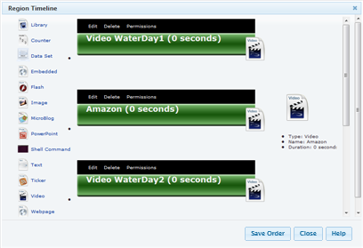
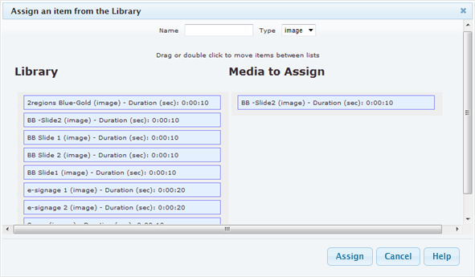

Now you have one or more regions, we need to put some content in the regions so there is something to show.
Regions can be used to assign single logos, such as company branding or a Playlist of media content. The content is played in a pre-defined timeline and looped until the layouts schedule has expired.
To edit a region's timeline (the sequence of media items that the region plays), double click within the region on the canvas or click "Edit Timeline" box. You will see the timeline appear:

On the left of the Region Timeline is a set of icons representing the different types of media you can assign to the region.
Your administrator may have turned some of these content types off, or added new ones. We will look at each of the standard Xibo media types in detail here.
Library
The first button is the Library. This takes you to a list of media items that have already been uploaded either in the Library section or in a previous layout.
Counter
An on-screen count up/down timer for use with paper ticket systems
DataSets
Display Datasets data
Embedded
Embed some HTML
Flash
Add a Adobe Flash swf file
Image
Add Image lets you upload a new Image.
MicroBlog
Search the Identica and Twitter Microblogging services and display the results formatted by a template
Powerpoint
Add Powerpoint lets you upload a Powerpoint file.
Shell Command
Enter a shell command to execute.
Text
Add Text lets you type in some text and format it.
Ticker
Reformat an RSS feed in to a Ticker (scrolling or static text)
Video
Add Video lets you upload and assign a new video to the region.
Webpage
Embed an external webpage: The add web page button is used to insert the contents of a web page directly into the region on the layout.
The media content i.e. image, video, flash, and powerpoint; beside upload new content from local system, the content may also be assigned from the media library if they exist.
Add from Library
- Click Add Library icon; or alternatively
After click on any of the add media icon, a new dialogue appears to add item;
Then click the "Library" instead of "Browse..." button- An "Assign an item from the Library" dialogue appears:

- Define filters "Name" & "Type" (All, image, video) of item to display for selection
- Assigning media from the library interface uses a 2-list style interface of available/assigned media. Items can be dragged and dropped from the available list to the assignment list and re-ordered before assignment.
- Click "Assign"
Alternative method to assign media:
- Double click on each item you want under "Library" coloum
- The selected items will move to "Media to Assign" column